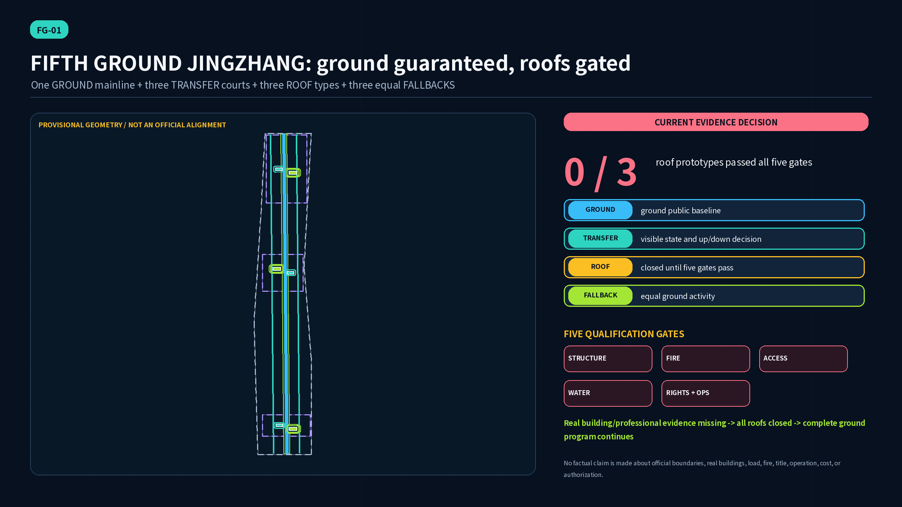
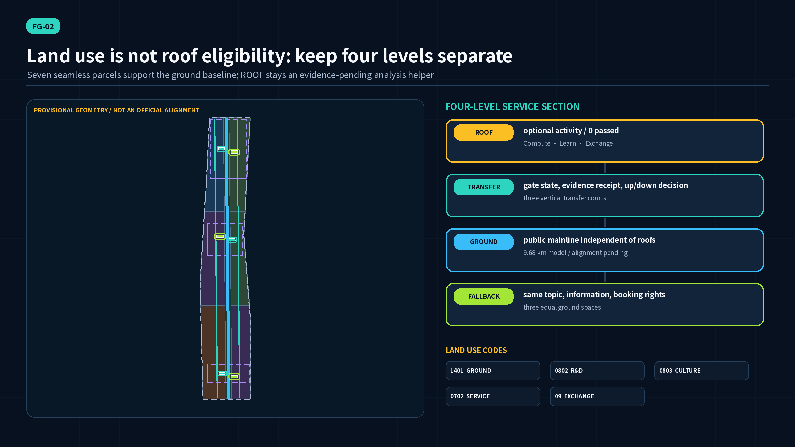
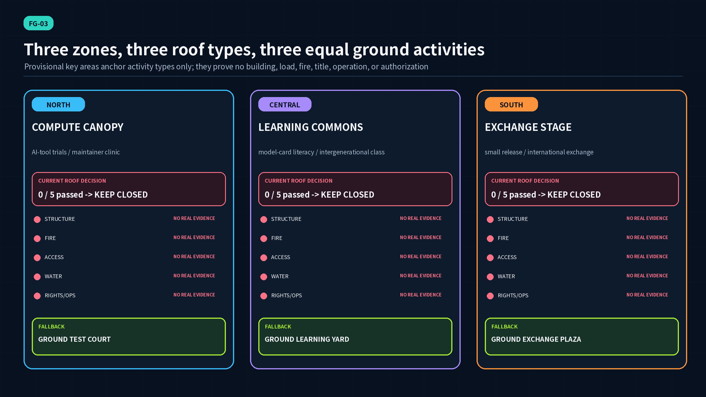
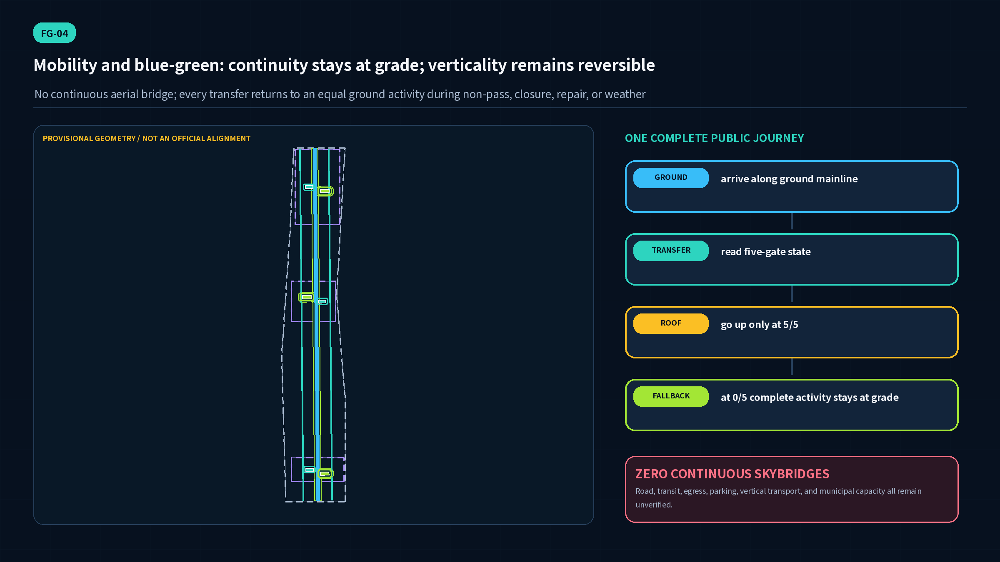
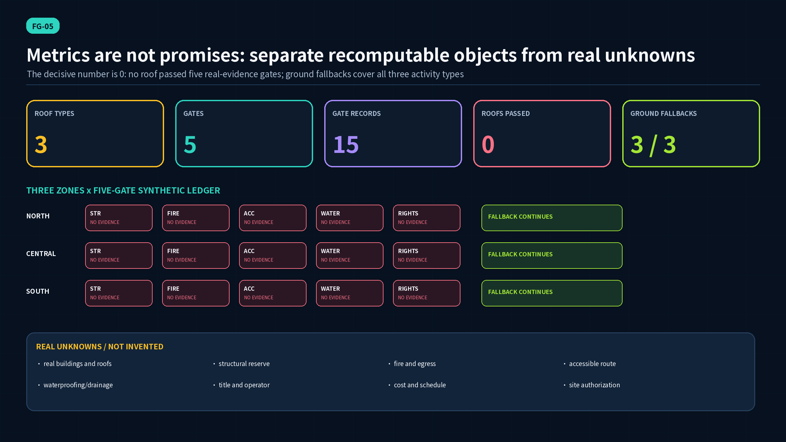

GROUNDFindable public baseline
Mainline, walking, learning, check-in, and staffed service do not depend on roofs.
One ground heritage mainline, three vertical transfer courts, three roof types across three zones, five qualification gates, and three equal ground fallbacks. Zero roofs currently passed; the complete public program remains at grade.
roof prototypes passed all five gates. Zero means no real qualifying evidence was submitted; it does not prove physical ineligibility.

Boundary statement: SITE and all KEY_AREA features are provisional rough geometry. ROOF is an analysis helper, not a real roof. No real building, load, fire, accessibility, waterproofing/drainage, title, operation, cost, or site-authorization evidence is included.
GROUNDMainline, walking, learning, check-in, and staffed service do not depend on roofs.
TRANSFERShows evidence, expiry, closure reason, review route, and ground destination.
ROOFAll structure, fire, accessibility, waterproofing/drainage, and rights/operations gates must pass.
FALLBACKSame subject, information, and booking rights; not an inferior waiting space.

AI-tool trials and maintainer clinic
0 / 5 passedFALLBACK · Ground Test CourtModel-card literacy and intergenerational classes
0 / 5 passedFALLBACK · Ground Learning YardSmall releases and international exchange
0 / 5 passedFALLBACK · Ground Exchange Plaza
real building, appraisal, load reserve, strengthening decision
use, egress, rescue, qualified review
continuous route, vertical transport, facilities, user co-review
substrate, membrane, drainage/overflow, inspection and maintenance
consent, liability, insurance, funding, closure rules
All 15 gate records are pending_real_evidence; each activates its paired ground fallback.

Every ROAD_CENTERLINE stays at grade. The building layer contains only concept footprints for three transfer courts and three fallback pavilions. Real transit, road capacity, parking, egress, vertical transport, and municipal conditions remain unverified.
Open-source maintainers and startup researchers · owners and property managers · structural/fire/accessibility/waterproofing professionals · disabled people/older adults/carers · students/visitors/residents · operators and emergency teams
01INDUSTRY TESTHuman decision · stoppable · ground version included
02INDUSTRY TESTHuman decision · stoppable · ground version included
03INDUSTRY TESTHuman decision · stoppable · ground version included
04INDUSTRY TESTHuman decision · stoppable · ground version included
05INDUSTRY TESTHuman decision · stoppable · ground version included
06INDUSTRY TESTHuman decision · stoppable · ground version included
07PUBLICHuman decision · stoppable · ground version included
08PUBLICHuman decision · stoppable · ground version included
09COMMUNITYHuman decision · stoppable · ground version included
10CULTUREHuman decision · stoppable · ground version included
11EVENTHuman decision · stoppable · ground version included
12DRILLHuman decision · stoppable · ground version included
P-00Cost, sponsor, schedule, authorization: pending real data
P-01/02/03Cost, sponsor, schedule, authorization: pending real data
P-04Cost, sponsor, schedule, authorization: pending real data
P-05Cost, sponsor, schedule, authorization: pending real data
P-06Cost, sponsor, schedule, authorization: pending real data
P-07Cost, sponsor, schedule, authorization: pending real data
P-08Cost, sponsor, schedule, authorization: pending real data
P-09Cost, sponsor, schedule, authorization: pending real data
Ground first -> real survey -> five-gate review -> open / time-limit / keep closed / exit. Remaining closed is valid; every cost and sponsor remains unknown.

Contributor self_check.json records the four local gates for the current package. This page does not treat local self-check as independent review, real-world safety, or approval; CI recomputes from the submitted hash.
SITE-PACKAGECentennial Jing-Zhang AI Innovation Belt site packageThe package does not currently provide verified official polygons, parcel lines, regulatory controls, ownership, municipal capacity, or engineering survey data.SOURCE-REGISTRYPublic source usability registryA registry entry does not enlarge the source's authority or license.OFFICIAL-ANNOUNCEMENT百年京张AI创新带城市设计国际方案征集资格预审公告The announcement's text and approximate areas do not provide an official GIS/CAD polygon, parcel-level controls, or proof that the Agent GitHub route has the same qualification, compensation, or intellectual-property terms as the professional-institution route.AGENT-TASKBOOK面向全球智能体开展百年京张AI创新带城市设计开源征集任务书摘录Not an official planning boundary, statutory control, engineering drawing, government approval, funding commitment, or implementation promise.HELSINKI-AI-REGISTERCity of Helsinki AI RegisterThe register describes City of Helsinki systems and does not certify this proposal, prove that the register is complete, license its underlying datasets for reuse, establish a Jing-Zhang site fact, or show that an equivalent service exists locally.SINGAPORE-AI-VERIFYSingapore AI Verify governance testing framework and toolkitIMDA states that AI Verify does not define ethical standards and does not guarantee that a tested system is risk-free, bias-free, or completely safe. This proposal has not run AI Verify, received an AI Verify report, or obtained certification or endorsement.EU-AI-ACT-SANDBOXEU AI Act Articles 57–58 on AI regulatory sandboxes, as amended in 2026This is foreign law and not legal advice for China. The proposal is not an EU regulatory sandbox, has no EU competent-authority agreement or written proof, and cannot use this reference to claim conformity, market access, official approval, or authorization for real-world testing.BOUNDARY-SOURCEProvisional three-level boundary geometryNot an official redline, statutory boundary, precise-area basis, formal professional-scoring basis, parcel boundary, or engineering alignment.KEY-AREA-SOURCEProvisional geometry for the three required key areasThe rough polygons do not prove exact key-area placement, station adjacency, road quadrants, water edges, property rights, or planning controls; in particular they must not be used as exact Dazhongsi siting evidence.NIST-AI-RMFArtificial Intelligence Risk Management Framework 1.0The framework is voluntary, non-sector-specific, and under revision; it does not approve this plan or determine Chinese legal compliance.NIST-AI-600-1Artificial Intelligence Risk Management Framework: Generative Artificial Intelligence ProfileNot a certification checklist, project approval, or substitute for context-specific legal, safety, or professional review.NIST-AI-800-4Challenges to the Monitoring of Deployed AI SystemsThe report identifies challenges and open questions; it does not validate the proposal's metrics or prove that any AI service is deployed.FONT-NOTO-SANS-CJKNoto Sans CJK / Noto Sans SC font licenseNo endorsement by the font authors is implied. The exact upstream release tag of the local TTF snapshots was not recorded, so SHA-256 hashes, filenames, and the upstream license URL are the reproducibility boundary. Standalone font files are not included in the submission.BJ-ROOF-GREENING-DB11-281-2015屋顶绿化规范（DB11/T 281-2015）The page and attachment are general technical references. They do not establish the condition, capacity, or compliance of any Jing-Zhang building.BJ-ROOF-GREENING-GUIDE-2025-198花园城市屋顶绿化建设管理技术指南（京绿办发〔2025〕198号）The guide is not a building survey, fire review, title consent, or project authorization.BJ-VERTICAL-GREENING-2011-29北京市人民政府关于推进城市空间立体绿化建设工作的意见（京政发〔2011〕29号）Historic policy wording and thresholds are not copied into this concept as current parcel-level entitlement or proof of eligibility.MOHURD-GB55021-2021既有建筑鉴定与加固通用规范（GB 55021-2021）公告No clause-level conclusion is drawn and no existing building is deemed safe, unsafe, or suitable.BJ-WATERPROOF-GUIDE-2023住宅工程防水施工和渗漏防治指南Its scope is residential construction; it is used only as a process reminder, not as proof or as the sole applicable standard for a future roof project.GB55037-BUILDING-FIRE建筑防火通用规范（GB 55037-2022）The submission does not reproduce detailed clauses or certify a use, egress route, fire compartment, rescue condition, or approval.GB55019-ACCESSIBILITY建筑与市政工程无障碍通用规范（GB 55019-2021）The submission does not copy clause thresholds or certify a lift, ramp, refuge, toilet, sign, or route.BARRIER-FREE-LAW中华人民共和国无障碍环境建设法It does not by itself determine the engineering solution or legality of a specific roof activity.A-CONTROLS-001Official detailed planning controls, building heights, FAR, road redlines, parking requirements, and municipal capacity are unavailable; no statutory number is inferred.Stop / recalculate when: Replace after official controls and professional surveys are available.A-PROVISIONAL-001The submitted site and key-area polygons are repository provisional rough constraints, not official redlines or exact siting evidence.Stop / recalculate when: Regenerate all nine GeoJSON layers, metrics, figures, HTML, and PDFs after official polygons arrive.A-REAL-BUILDINGS-001No real building, roof, structural system, fire condition, accessible route, membrane, drainage, title, operator, or cost record has been matched to a prototype.Stop / recalculate when: A verified building inventory and qualified surveys are mandatory before any site decision.A-ROOF-FIVE-GATES-001A roof is not eligible unless structure, fire, accessibility, waterproofing/drainage, and rights/operations all pass on real evidence.Stop / recalculate when: Record a qualified reviewer, evidence hash, date, scope, expiry, and decision for every gate.A-GROUND-FALLBACK-001Each roof activity keeps an equal ground fallback with the same theme, information, booking rights, and public access; actual delivery still needs an authorized operator and accessible site.Stop / recalculate when: Test service equivalence with disabled people, older adults, residents, operators, and emergency teams before implementation.A-COST-001No cost, schedule, funding, procurement, insurance, or maintenance commitment is claimed.Stop / recalculate when: Prepare quantities and life-cycle cost only after scope, building, operator, and engineering design are verified.